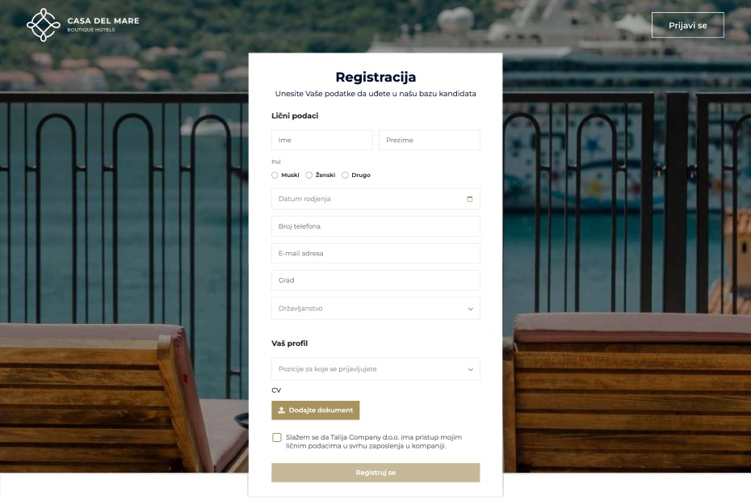

Glavni dashboard prikazuje relevantne statističke podatke, npr. lista osoba koje su zaposleni u kompaniji, a kojima uskoro ističe ugovor, pa tako u HR-u znaju da toj osobi treba produžiti ili raskinuti saradnju.
